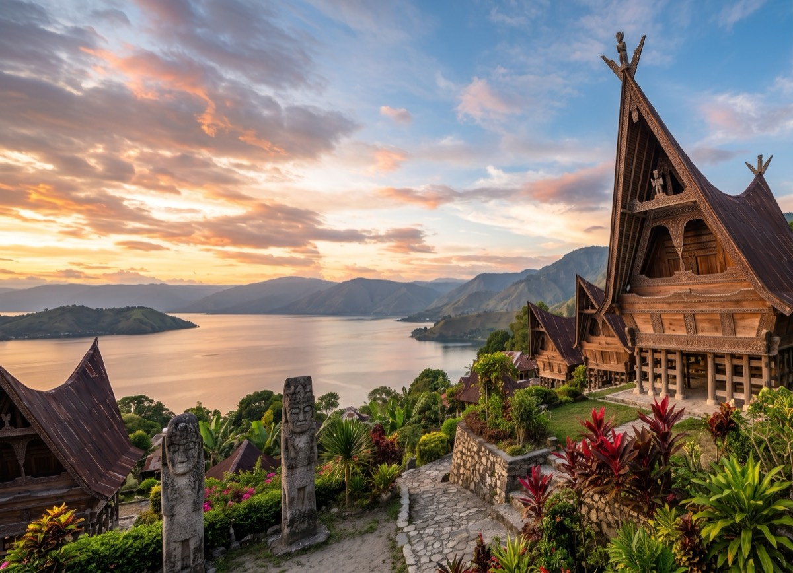
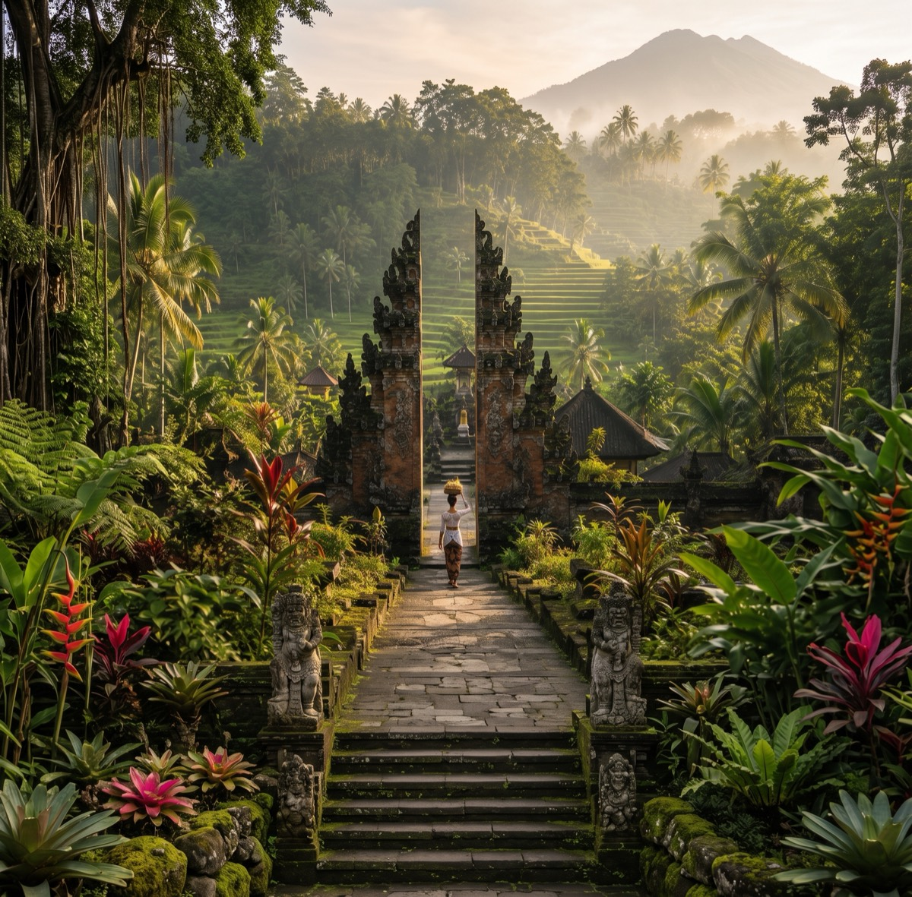
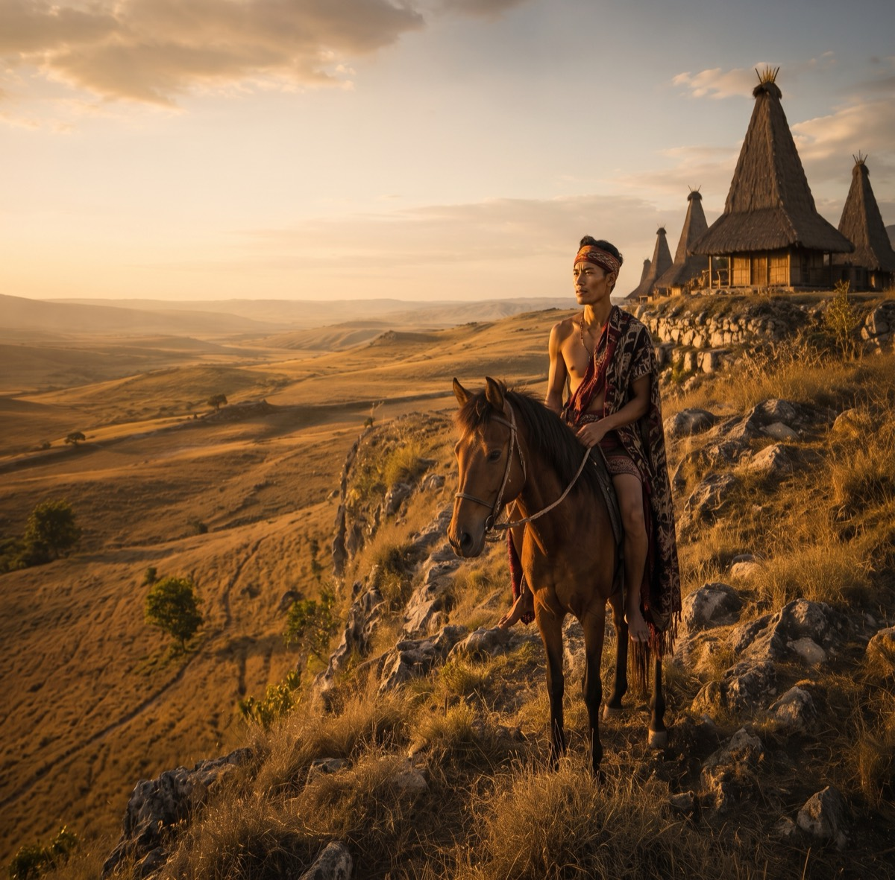
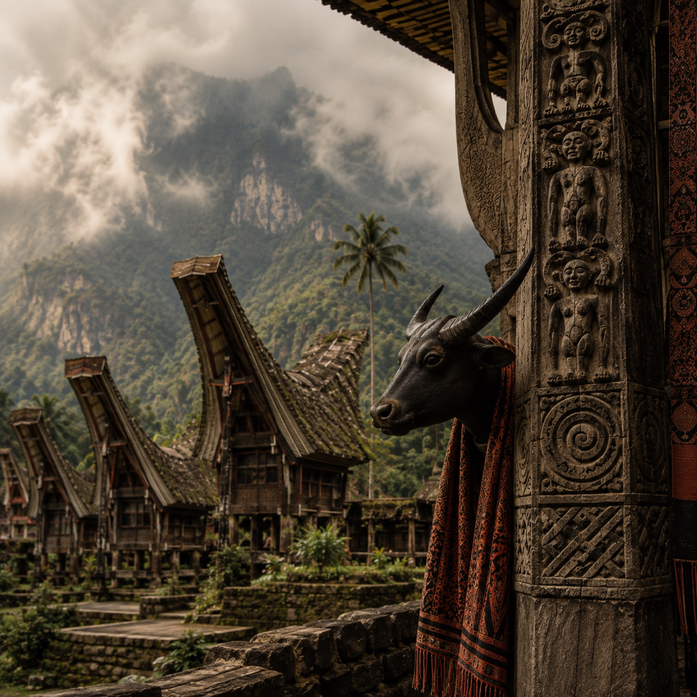
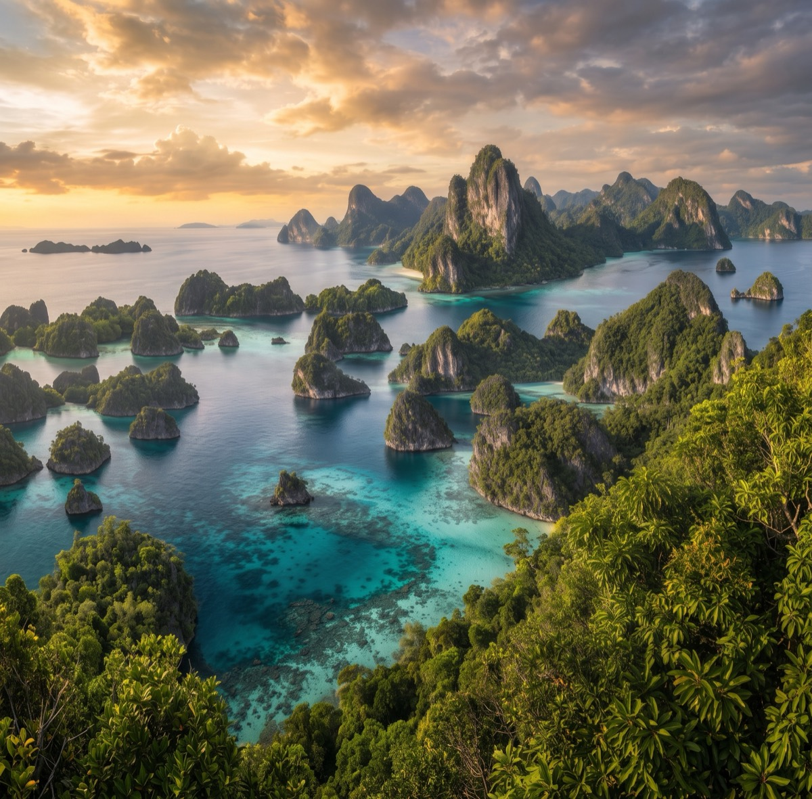

Sumatra
Lake Toba & the Batak Highlands
Caldera landscapes, village architecture, music, and long overland journeys through the north.
Best discussed: May–SeptemberCompose →
Destinations
Indonesia is not a single route. Start with a landscape, an island, or a question—and we will help you connect the right places.

Sumatra
Caldera landscapes, village architecture, music, and long overland journeys through the north.
Java
Living arts, ancient sites, railway journeys, and volcanic landscapes with depth between the landmarks.

Bali & Nusa Tenggara
Highland villages, walking routes, makers, reefs, and onward connections to Lombok, Sumba, and Flores.

Kalimantan
Journeys by river and road, arranged carefully around conservation partners and local guides.

Sulawesi
Distinct cultural landscapes in the mountains and long island chains offshore.

Maluku & West Papua
Small-ship routes, village waters, and some of the most extraordinary marine environments in the archipelago.